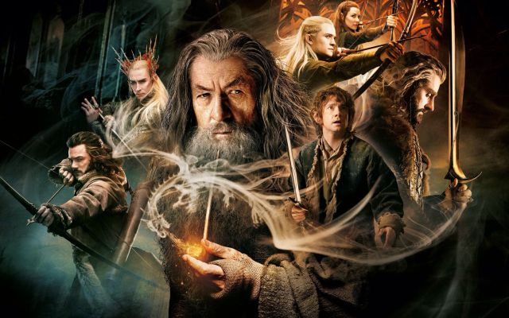

Las Películas
Hay un total de seis películas de 'El Señor de los Anillos', si descontamos la incompleta (y muy atrevida) adaptación animada de Ralph Bakshi de 1978. Adaptan la trilogía de novelas 'El Señor de los Anillos' y el volumen único de 'El Hobbit', y juntas conforman una de las sagas cinematográficas más ambiciosas, taquilleras y adoradas de la historia del cine fantástico.
Orden cronológico
Deberemos empezar por las tres películas de 'El Hobbit', donde conoceremos a un joven Bilbo Bolsón y ya aparecerán elementos clave del posterior desarrollo de la saga: el Anillo de Poder, Gollum y Gandalf entre muchos otros. Este sería el orden cronológico:
- El Hobbit: Un viaje inesperado (2012)
- El Hobbit: La desolación de Smaug (2013)
- El Hobbit: La batalla de los cinco ejércitos (2014)
- El Señor de los Anillos: La comunidad del anillo (2001)
- El Señor de los Anillos: Las dos torres (2002)
- El Señor de los Anillos: El retorno del rey (2003)
Trabajo práctico
Codo a codo - 2do cuatrimestre - 2022
Alejandro Cueto - Diego Mirabelli